小泉稲荷神社/群馬県
小泉稲荷神社は崇神天皇の時代に、伏見稲荷の分霊を祀ったのがそのルーツといわれている。
つまり紀元前からある神社、ということになる。
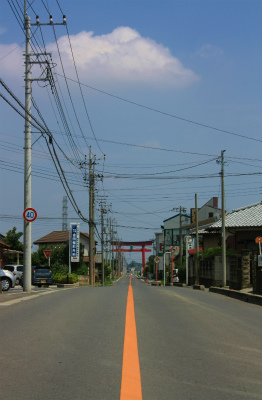
神社に向かう道には巨大な一の鳥居が聳え立っている。高さは22.17ｍ。竣工は昭和５６年。
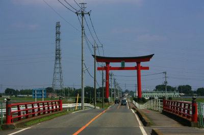
電柱と鉄塔以外、周囲に高い建物がないのでその大きさは異様に際立つのである。
門の直下を通るチビッコ達と比べていただきたい。その大きさがお判りいただけるかと思う。
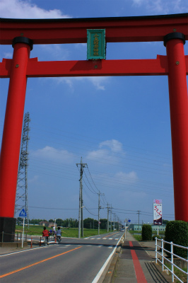 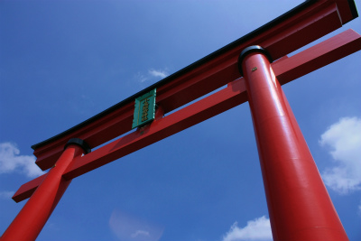
一体何故巨大な鳥居を建立するのだろう？
その理由を勝手に想像してみました。
1.お金が余って仕方がないから税金対策として
2.信仰心が高まりすぎて居ても立ってもいられなくなって
3.神社の偉大さを内外にアピール
4.神様の大きさは確かコレくらいだったような気がしたので…
5.夢の中でデカい鳥居を建てろ、と神の啓示を受けた
6.元々電柱が立っていたので赤く塗って笠木を乗せてみた
7.ひとケタ間違えて発注しちゃった
8.ギネスブックに載りたかった
…とまあ、こんなところでしょうか。
個人的には1枠を軸に1-3,1-5あたりが◎かと思うのだが、意表を突いて5-7あたりもあながちなきにしもあらず、の△でしょう。
ただその場合相当思い込みが強くてあわてん坊な人が建立した、ということになるが。
…スミマセン。妄言が過ぎました。きっと篤い信仰心の表れなのでしょう。というわけで本命は2-3！…であって欲しいものです。
それにしても巨大鳥居って不思議だ。
日本にはこのようなコンクリート製の20ｍを超える鳥居がいくつか存在する。
信仰上のモニュメントとしてどうしてもコンクリ大仏と比べざるを得ない訳だが、大仏の場合、20ｍを超えると胎内巡りというアトラクションが必須アイテムとなる。
しかし鳥居の場合、あくまでも遠くから眺めて神の存在の大きさを感じるためのモニュメントなのだ。
いくら巨大だからといって右の柱の中の螺旋階段上って笠木の間を通って左の柱から下りる、といった参拝アトラクションは存在しない。
…いや、もしかしたら公開しないだけで機能的には備わっている鳥居があるのかも知れない。だとしたら是非上ってみたいぞ。
これからは巨大鳥居を見かけたら今までよりも積極的にお近づきしてみようと思う所存である。
…てなわけで…
そんな小泉稲荷神社だが、一の鳥居の巨大っぷりの割には境内はあまり広くなく、立地も住宅街の一画、といった風情である。
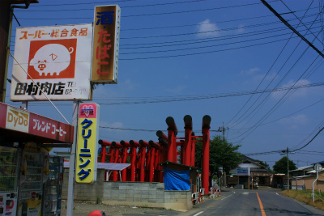
しかし特筆すべきはその鳥居の数である。
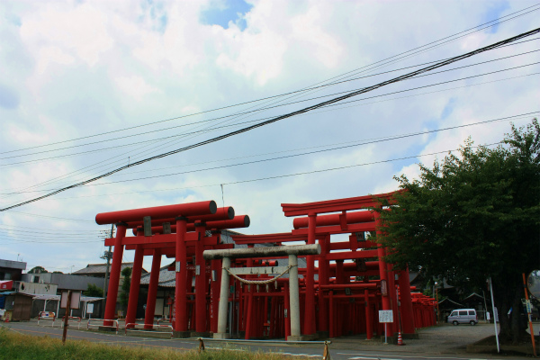
入口には大量の鳥居が林立していて、その密度に度肝を抜かれる。
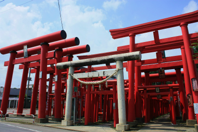
鳥居は３列になっており、どこから入ったらいいのか一瞬躊躇してしまうが、結局同じところに行き着くのでご安心を。
手前の大型の鳥居3つは連結して強度を高めてあった。
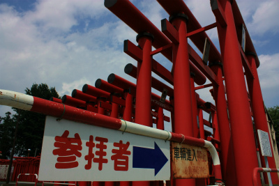
左手の鳥居は特に大型なのだが、奉納者である企業名とグループ名がデカデカと書かれている。
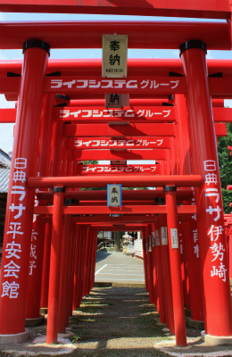
調べてみたら地元の葬祭会場のチェーングループだった。
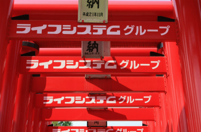
いわゆる葬儀屋さんがこれ見よがしに鳥居を奉納するというのはあまり見たことがない。
ホラ、お稲荷さんって商売繁盛の神様といわれるじゃないですか、葬儀屋さんが商売繁盛って、ねえ。どうなんでしょ。
ただ、少しだけ真面目なハナシをさせてもらうと、稲荷信仰というものは元々生も死も併せ呑む度量の広い神様なのだ。
鳥居の朱色は血のメタファーだし、それがいくつも並ぶのは人間の生と死が無限に連鎖する様を表現している、と考えてもおかしくはなかろう。
そういう意味では葬祭関係の企業が鳥居を奉納するのもあながち的外れではないのかな。いや、でもやっぱ違和感ぬぐえないわー。
夏の昼下がり、地面には鳥居によるゆがんだストライプが出来ていた。
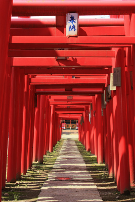
鳥居を抜けると本殿。
先ほどの濃い鳥居群が嘘のようにいたって普通の社殿である。
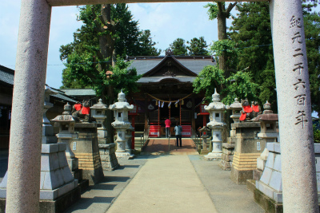
その裏には稲荷社が。
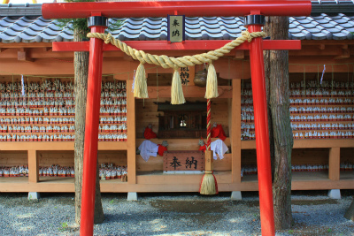
比較的新しい社殿には紅白の布を掛けられた狐やいた。
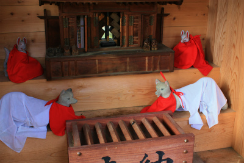
そしてその両サイドには大量の陶器の狐が。
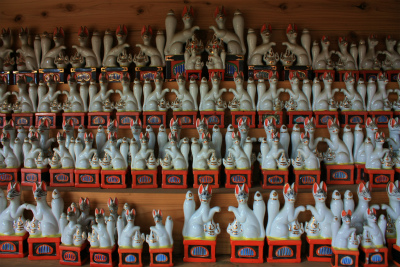
恐らく各家庭に祀られていたが、古くなったものや必要なくなったものが集められたのだろう。
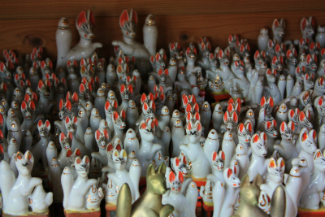
鳥居もさることながら無縁狐の群れも凄みがある。
よく狐は祟るというから、要らなくなっても無下に捨てることも出来ないのであろう。
傍らには絵馬が奉納されていた。
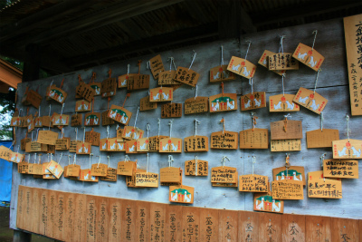
祈願内容が雑なことはさておき、絵馬に描かれている鳥居は笠木が反っている、いわゆる明神タイプ（明神とか神明とか判り難くてすみませんね、俺が付けたネーミングじゃないんで勘弁してください）である。
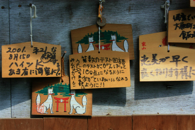
本当は神社サイドとしては笠木の反った鳥居を奉納して欲しいのだろうか？
ちなみに本家の京都伏見稲荷はほ全ての鳥居が笠木の反ったタイプである。
稲荷社の周囲には仮設の小屋があった。縁日などには店が出るのだろう。
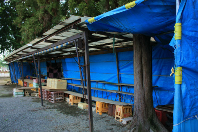
再び鳥居に戻り、外側から眺めてみる。
鳥居は大きく分けて２つの種類に分けられる。
鳥居の一番上の部分、２本の柱に支えられて横たわっている笠木が丸太で作られているタイプと反りのあるタイプ。
前者の代表が神明鳥居、後者は明神鳥居という。
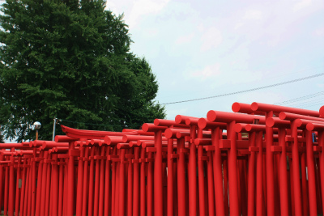
ここの鳥居は両タイプが混合しているが、大多数は笠木が丸材で作られているもの。つまり神明タイプ。
正確にいえば笠木の下にある四角い貫が柱を貫通しているので鹿島鳥居という分類になろう。
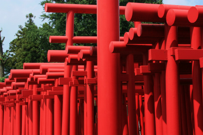
いずれにせよ比較的シンプルな形状に属するタイプの鳥居といっていいだろう。
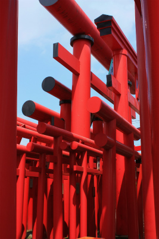
それにしても凄い数、そして密集具合。
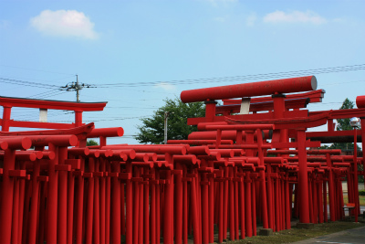
その数は300基以上だとか。
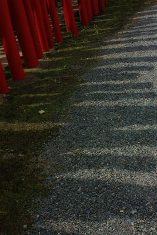
横から見るとなんだかモダンアートのようだ。
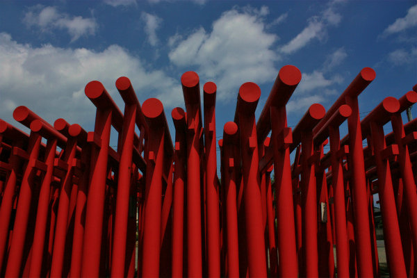
直線と円で構成された赤く幾何学的な構成、まんまロシアアバンギャルドの世界じゃないか。群馬の片田舎のお稲荷さんなのに。
2010.07.
珍寺大道場 HOME